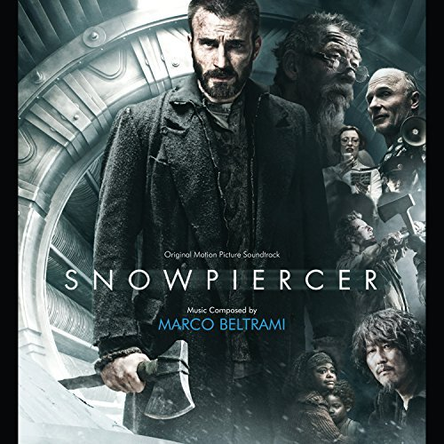

Snowpiercer
(Original Motion Picture Soundtrack)
Available on:
Amazon
itunes

Bong Joon-ho | IMDB
born September 14, 1969 is a South Korean film director and screenwriter. His films include monster movie The Host (2006) and sci-fi action movie Snowpiercer (2013), both of which are among the highest-grossing films of all time in South Korea. His most recent film, Okja, debuted at the 2017 Cannes Film Festival, where it received a four-minute standing ovation.
In 2017, Metacritic ranked Bong #13 on its list of the 25 best film directors of the 21st century. His films are known for their uncomfortable subject matter, black humor and sudden mood shifts.

The nations release the substance CW-7 with the intention of controlling the global warning, but accidentally it results in another Ice Age destroying Earth. The only survivors live in the train Snowpiercer which is driven by a perpetual motion engine created by the millionaire Wilford that lives in the engine part. In 2031, after seventeen years, there is a fight of classes inside the train since the oppressed lower class lives in dreadful conditions in the last wagons of the train while the elite lives in the front wagons. The lower class is fed with protein bars only; they are oppressed and punished by Minister Mason and her brutal guards; and their children are taken every now and then when they reach a certain height. The leaders Gilliam, Curtis Everett and Edgar are plotting a scheme to reach the engine and talk to Wilford about their conditions using the addicted security engineer Namgoong Minsoo and his clairvoyant daughter Yona that are imprisoned to open the locked doors. When the son of Tanya, Timmy, is captured by Mason, they decide to execute their plan. There are many casualties and soon Curtis discovers that they have been manipulated by Wilford to balance the resources in the train, and why the magnate keeps the lower class alive.


REVIEWS
Roger Ebert's Far-Flung Correspondents - "I know it is a cliché, but I must say this: "Snowpiercer" is something we do not come across often in movie theaters nowadays. This is a smart, compelling science fiction film—about a train that travels through a frozen future landscape—which can intrigue us with its futuristic setting at the beginning and then pull our attention into its thrilling journey packed with interesting sights until it arrives at the powerful finale where we come to care about not only what has happened during the characters' journey but also what will happen next at their arrival point." [Seongyong Cho]
New York Times - In the mood for allegory? Have a look at Bong Joon-ho’s “Snowpiercer,” which proceeds from a fantastical premise rich with real-world relevance....“Snowpiercer,” based on the graphic novel “Le Transperceneige” by Jacques Lob, Benjamin Legrand and Jean-Marc Rochette, is unusually satisfying in that regard as well. Mr. Bong, whose previous films include the brilliant psychological thriller “Mother” and “The Host,” a sublimely moving monster flick, is a playful and rigorous visual thinker. Here he stages kinetic fight scenes in narrow spaces and punctuates the noise and speed of the train with moments of eerie, poignant calm as it glides through digitally rendered ice and snow. The violence inside swerves from slapstick to bloodshed and back, producing a volatile blend of humor and horror that pays tribute to the source material while coloring its themes with the director’s distinctively perverse and humane sensibility. [A.O. Scott]
San Francisco Chronicle - Easy to watch and easy to enjoy, "Snowpiercer" is challenging to think about, a seemingly straightforward action movie that isn't simple at all. Under the surface of an ostensibly clear-cut moral universe, there is no good or bad here, just stupid or less stupid. "Snowpiercer" is a rumination on what goes into creating a society, and what must be sacrificed to stave off chaos...."Snowpiercer" takes place on a high-speed train, sometime in a very bad near future. Apparently, some years before, an attempted quick fix of global warming resulted in a frozen planet and the death of every living thing - except for people who happened to be riding on this high-speed train. There followed an interlude of cannibalism and brutality, until order was restored and a social hierarchy constructed. [Mick LaSalle]
Privacy Policy:
Snowpiercer Film (“Snowpiercer“) operates Snowpiercer.com and may operate other websites. It is Snowpiercer’s policy to respect your privacy regarding any information we may collect while operating our websites.
Privacy Policy Changes
Although most changes are likely to be minor, Snowpiercer may change its Privacy Policy from time to time, and in Snowpiercer’s sole discretion. Snowpiercer encourages visitors to frequently check this page for any changes to its Privacy Policy. If you have a Snowpiercer.com account, you might also receive an alert informing you of these changes. Your continued use of this site after any change in this Privacy Policy will constitute your acceptance of such change.
Terms of Service:
The following terms and conditions govern all use of the Snowpiercer.com website and all content, services and products available at or through the website (taken together, the Website). The Website is owned and operated by Snowpiercer Film (“Snowpiercer”). The Website is offered subject to your acceptance without modification of all of the terms and conditions contained herein and all other operating rules, policies (including, without limitation, Snowpiercer’s Privacy Policy) and procedures that may be published from time to time on this Site by Snowpiercer (collectively, the “Agreement”).
Please read this Agreement carefully before accessing or using the Website. By accessing or using any part of the web site, you agree to become bound by the terms and conditions of this agreement. If you do not agree to all the terms and conditions of this agreement, then you may not access the Website or use any services. If these terms and conditions are considered an offer by Snowpiercer, acceptance is expressly limited to these terms. The Website is available only to individuals who are at least 13 years old.